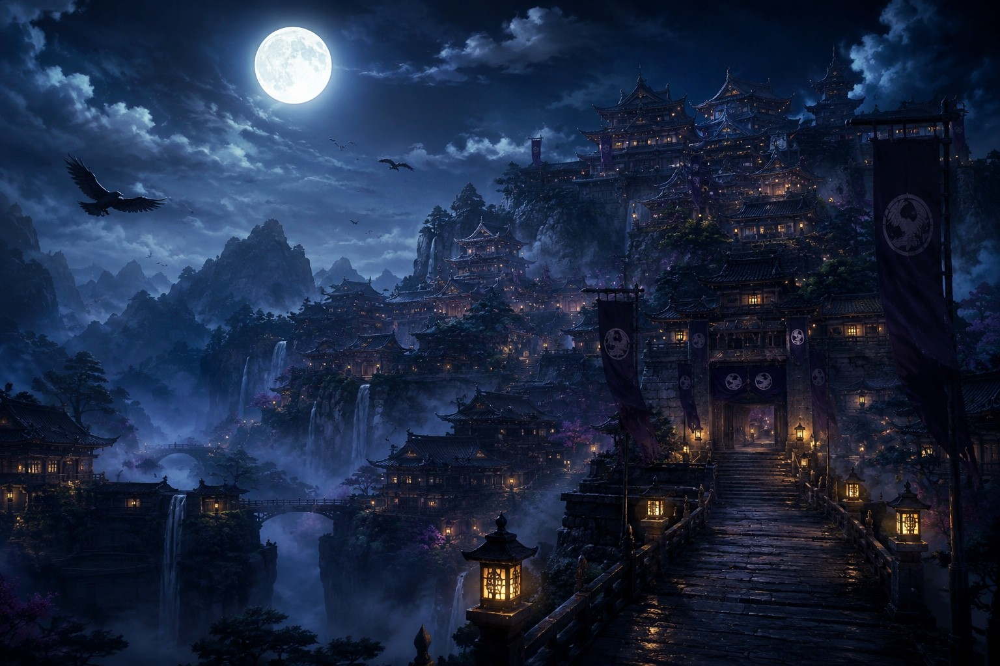
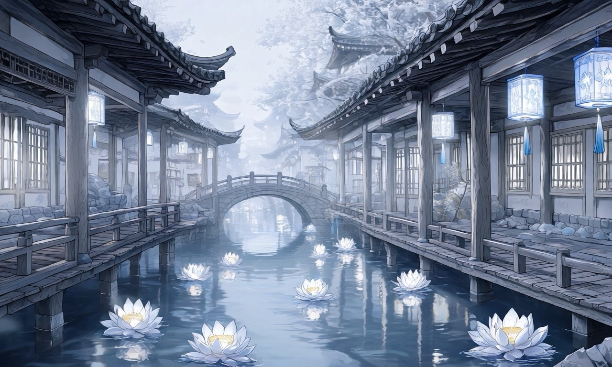

01天鴉領
TENKARASU DOMAIN
夜と黒翼を統べる、鴉天狗の領地。
若き当主・鴉月が治める山深い領域。誇りと義務、契約を重んじ、金の瞳と黒翼を持つ鴉天狗たちが暮らす。
RECORD : OPEN ↓ ÉTERNOACREATIVE MAISON
ÉTERNOACREATIVE MAISONWORLD
人の世とは薄い境界を隔てて存在する《東方妖界》。 そこには、異なる妖たちが治める複数の領地がある。 土地ごとに掟も文化も異なり、当主たちはそれぞれの民と領域を守っている。
政略婚、契約、治療、古い因縁。 人と妖が出会うたび、守るべき境界は少しずつ形を変える。 これは、ひとつの恋では終わらない妖界の記録。
DOMAIN RECORDS

TENKARASU DOMAIN
若き当主・鴉月が治める山深い領域。誇りと義務、契約を重んじ、金の瞳と黒翼を持つ鴉天狗たちが暮らす。
RECORD : OPEN ↓
HAKUREI DOMAIN
医療と薬草を司る静かな領地。白を基調とした景色の中、治癒と毒、命を巡る妖の知恵が受け継がれている。
RECORD : OPEN ↓TALES OF THE YOUKAI REALM
ENTER THE ARCHIVE
東方妖界以外の世界と、独立した物語も月明かりの書架に収録されています。